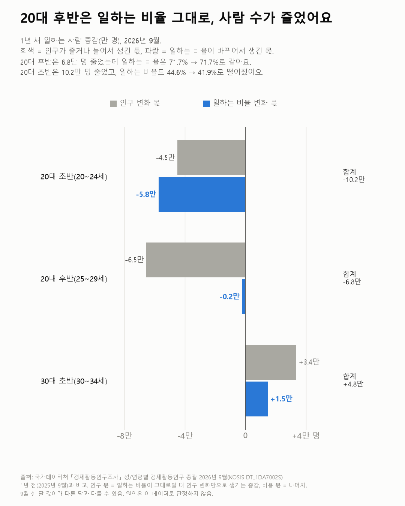
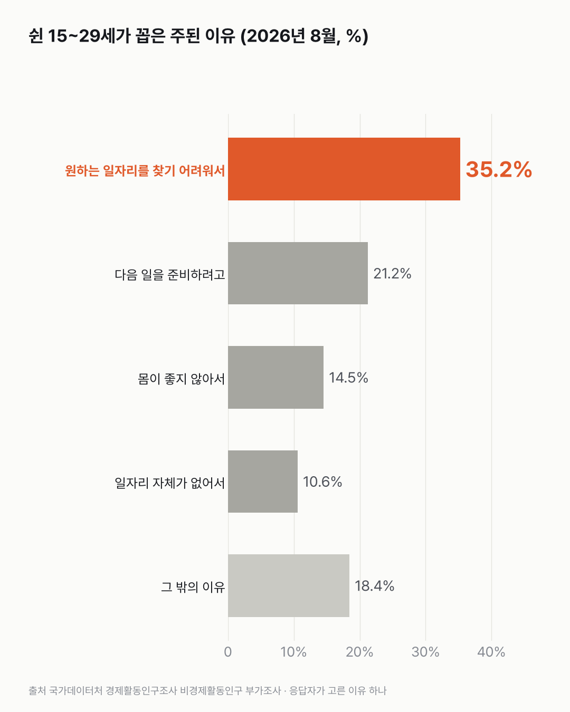

청년 취업자가 줄었다는데, 20대 후반은 1년 전만큼 일해요
줄어든 청년 취업자 넷 중 셋은 사람 수가 줄어든 데서 나왔어요. 일하는 비율이 내려간 곳은 막 일을 시작하는 20대 초반이었어요.

- 2026년 9월 일하는 15~29세는 1년 새 14.7만 명 줄었어요. 이 중 10.8만 명은 청년 인구가 줄어서 생긴 감소예요.
- 25~29세는 일하는 비율이 71.7%로 1년 전과 같아요. 떨어진 건 20~24세예요(44.6% → 41.9%).
- 일도 구직도 안 하고 쉰 15~29세의 35.2%는 '원하는 일자리를 찾기 어려워서'라고 답했어요.
청년 취업자가 줄었다면, 일하는 청년이 드물어진 걸까요? 사람 수가 줄어서인지, 일하는 비율이 떨어져서인지 따로 나눠 봤어요. 25~29세부터요. 이 나이대 취업자는 6.8만 명 줄었는데, 일하는 비율은 1년 전과 소수점까지 같았어요. 거의 다 사람 수가 줄어서 생긴 감소예요.
15~29세 전체로 넓히면 취업자는 1년 새 14.7만 명 줄었어요. 나이대마다 일하는 비율이 1년 전 그대로였어도 10.8만 명은 줄었을 거예요. 청년 인구 자체가 줄고 있으니까요. 일하는 비율이 떨어져서 줄어든 건 3.9만 명이에요. 이 계산은 두 번 해 봤어요. 15~29세를 한 덩어리로 놓으면 인구 때문에 준 숫자가 6.5만 명으로 작게 나와서, 나이 구간마다 따로 계산해 더한 값으로 고쳤어요.
비율이 떨어진 곳은 20대 초반이었어요. 20~24세는 10.2만 명 줄었고, 일하는 비율도 44.6%에서 41.9%로 내려갔어요. 10대 후반은 2.4만 명 늘었는데, 대부분 일하는 비율이 올라서예요. 30대 초반도 4.8만 명 늘었어요.
9월 청년 실업률은 5.4%예요. 이것만 보면 작아 보이죠. 짧게 일하면서 더 일하고 싶은 사람, 일하고 싶지만 구직을 쉬는 사람까지 넣으면 15.6%가 돼요. 사람으로는 60.6만 명이에요.
8월 조사에서 일도 구직도 안 하고 쉰 15~29세는 39.5만 명이었어요. 1년 전 44.6만 명보다 줄었어요. 쉰 이유로는 '원하는 일자리를 찾기 어려워서'가 35.2%로 가장 많았어요. '다음 일을 준비하려고'가 21.2%, '몸이 좋지 않아서'가 14.5%였어요.

일자리 수로 세어도 20대는 줄었어요. 월급 받는 일자리 가운데 20대 이하가 가진 자리는 2023년부터 2026년 1/4분기까지 34.6만 개 줄었어요. 같은 기간 30대와 60대 이상 일자리는 늘었어요.
물론 길게 보면 쉬는 20대는 늘어 왔어요. '그냥 쉬었다'는 20대 비율은 2003년 2.7%에서 2025년 7.1%가 됐어요. 올해 줄어든 게 잠깐인지 방향이 바뀐 건지, 한 해 숫자로는 아직 가늠이 안 됐어요.
이 숫자는 어디서 왔나요
출처
기준일 2026년 8~9월(일자리는 2026년 1/4분기).
어떻게 셌나요
- 조사마다 시점과 기준이 달라요. 9월 한 달 값, 8월 부가조사, 분기 일자리 수(사람 수가 아님)가 섞여 있어서 숫자끼리 더하거나 나누지 않았어요. 차트 하나에는 한 조사만 넣었어요.
- 취업자 감소를 둘로 나눴어요. 1년 전 일하는 비율(고용률)이 그대로였다면 사람 수가 줄어든 것만으로 생겼을 감소가 하나, 나머지가 일하는 비율이 떨어져서 생긴 감소예요. 15~19·20~24·25~29세마다 따로 계산해 더했어요.
- 일이 모자란 청년은 실업자, 짧게 일하며 더 일하고 싶은 사람, 일하고 싶지만 구직을 쉬거나 당장 일할 수 없는 사람을 합한 거예요(고용보조지표3).
한계 4가지
이 데이터로 말할 수 없는 것
- 조사마다 시점(9월 한 달, 8월, 1/4분기)과 기준(사람 수, 일자리 수)이 달라서 같은 쪽을 가리킨다는 것까지만 말할 수 있어요.
- 9월 한 달 값이라 다른 달과 다를 수 있어요. 부가조사의 나이별 값은 표본이 작아 작은 변화는 오차일 수 있어요.
- '원하는 일자리'에서 무엇이 안 맞는지(월급, 조건, 전공, 지역)는 이 표에 없어요.
- 왜 이렇게 됐는지는 이 데이터로 알 수 없어요. 청년이 일을 하려 한다/안 한다는 판단도 하지 않았어요.
계산 기록
쓰기 전에 정한 것
- 새 데이터를 받지 않고, 이미 받은 원자료만 다시 쓰기로 했어요.
- 조사마다 시점과 기준이 달라서, 숫자끼리 더하거나 나누지 않고 차트 하나엔 한 조사만 넣기로 정했어요.
처음 던진 질문
뉴스에서 '요즘 청년들 일을 안 한다'는 얘기가 자주 나와요. 그래서 줄어든 청년 취업자를 나이별로 쪼개 봤어요. 실업률에 안 잡히는 사람, 쉬는 이유, 일자리 수도 하나씩 따로 열어 봤어요.
수집·검증 기록
- 새로 받은 데이터 없음. 원래 글(쉬었음 이유, 일이 모자란 청년, 산업별 청년 일자리, '그냥 쉬었다'는 20대)과 같은 원자료.
- 인구 효과 = Σ(나이 구간별 인구 증감 × 1년 전 고용률), 비율 효과 = 취업자 증감 − 인구 효과. 구간: 15~19·20~24·25~29세.
- 2026-11-05 정정: 15~29세를 한 덩어리로 계산하면 인구 효과가 6.5만 명으로 작게 나옴. 고용률이 낮은 10대 인구는 늘고 높은 20대 인구는 줄어 평균 고용률이 저절로 내려간 부분(약 4.3만 명)이 비율 효과로 섞이기 때문. 구간별 계산으로 고쳤고 청년 취업자 정의 글도 함께 고침.
- '셋 중 하나꼴' = 35.2%.
새 글 나오면 받아 보기
피드 리더 앱에 이 사이트 주소를 한 번 넣어 두면, 새 글이 올라올 때 앱에 떠요. 가입이나 메일 주소는 필요 없어요.
받는 법 보기
- 피드 리더 앱을 하나 골라요. 새 글을 모아 보여 주는 앱이에요. 예를 들면 Feedly나 Inoreader가 있어요. 둘 다 무료고 웹·휴대폰에서 써요.
- 앱에서 '구독 추가'(+)를 누르고 아래 주소를 붙여 넣어요.
- 끝이에요. 새 글이 올라오면 앱 목록에 떠요.
https://protofu.github.io/opendata-insight/feed.xmlFeedly를 쓴다면 여기를 눌러 바로 추가할 수도 있어요.